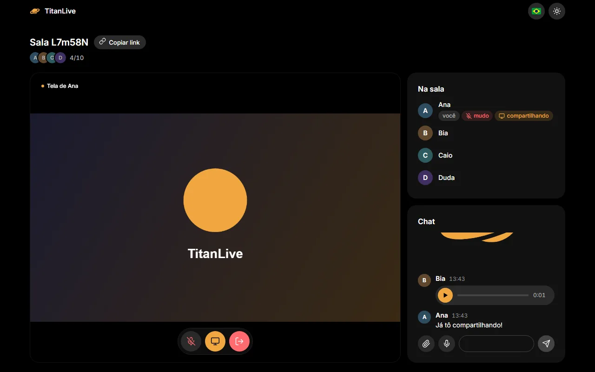
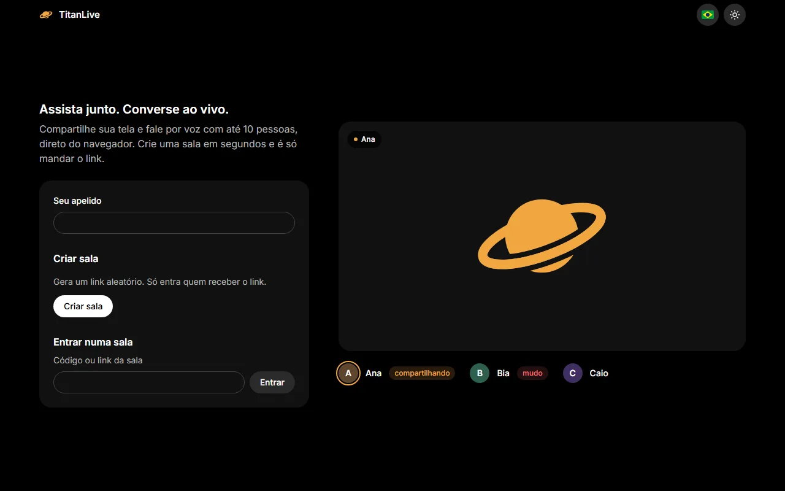
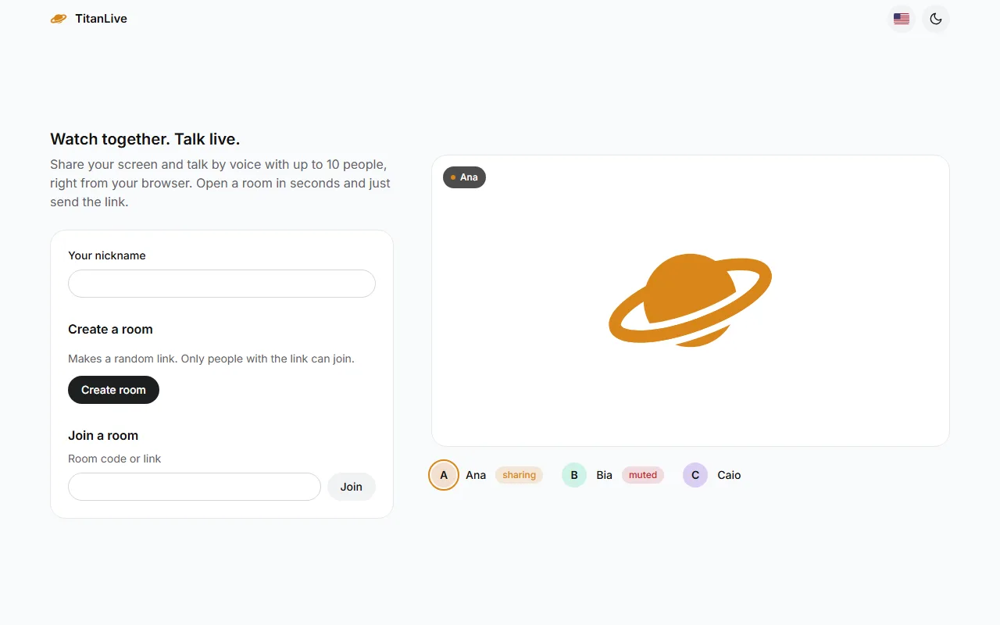

TitanLive
TitanLive
Assista junto e converse ao vivo: compartilhe a tela e fale por voz com até 10 pessoas, direto do navegador.Watch together and talk live: share your screen and talk by voice with up to 10 people, right from the browser.


 0
0

O que fazWhat it does
- Salas em um clique: um link aleatório é a chave, até 10 pessoas por sala.
- Rooms in one click: a random link is the key, up to 10 people per room.
- Compartilhamento de tela num palco grande para todo mundo assistir.
- Screen sharing on a big stage for everyone to watch.
- Câmeras e voz, com um anel dourado em quem está falando e supressão de ruído.
- Cameras and voice, with a gold ring on whoever is speaking and noise suppression.
- Chat com mídia: imagens, vídeos, áudios e notas de voz gravadas no próprio chat.
- Chat with media: images, videos, audio and voice notes recorded right in the chat.
- Reações que flutuam sobre o palco com o nome de quem mandou.
- Reactions that float over the stage with the sender's name.
- Reconecta sozinho quando a conexão cai, e tem TURN pronto para redes restritas.
- Reconnects by itself when the connection drops, and ships a TURN setup for strict networks.
- Tema claro e escuro, em português, inglês e espanhol.
- Light and dark themes, in Portuguese, English and Spanish.
Como funcionaHow it works
O servidor NestJS só faz a sinalização e o chat. A mídia vai direto entre os navegadores. Testado com Jest no servidor e Playwright com navegadores reais entrando em salas reais.The NestJS server only handles signaling and chat. Media flows directly between browsers. Tested with Jest on the server and Playwright with real browsers joining real rooms.
browser (Vite + TypeScript) ⇄ Socket.IO ⇄ NestJS (sinalização, chat)
⇅ WebRTC (tela + voz, ponta a ponta, TURN quando precisa)
browser ⇄ browser
Nada fica salvo. As salas existem só na memória do servidor. Mensagens e arquivos são repassados para quem está na sala e somem quando você sai. Áudio e vídeo vão direto entre os navegadores via WebRTC.Nothing is stored. Rooms live only in the server's memory. Messages and files are relayed to whoever is in the room and disappear when you leave. Audio and video go peer to peer over WebRTC.
TelasScreens

